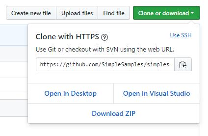

Hi there, this is my first GitHub Pages page.
I managed to open this in Visual Studio Code. First I need to specify some pre-requisites. To do what I did in the following you will need Visual Studio Code installed. You also need GitHub Desktop installed. I think (I am not sure) that GitHub Desktop is installed by Visual Studio if you select Git (or Source Control) for installation. I think you also need to configure GitHub Desktop to use Visual Studio Code. The following describes what I did to open a GitHub repository in Visual Studio Code.
First I created the repository in GitHub and created a couple of files there, including this one (index.html). Then I:

It works! It feels good! I can edit the files in my local repository. Then I did the following to save the changes back to GitHub.